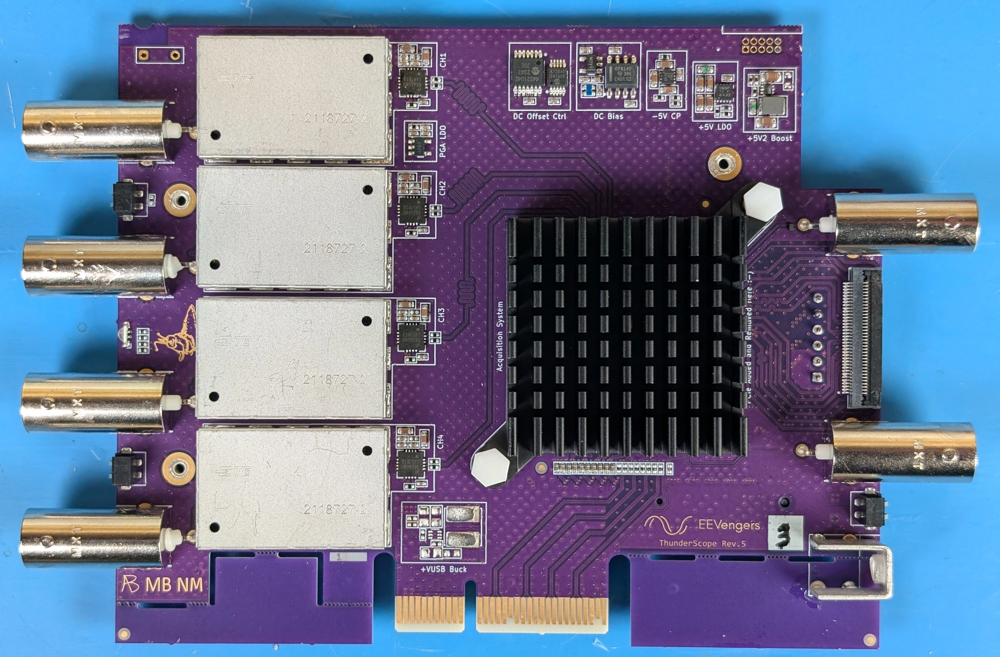
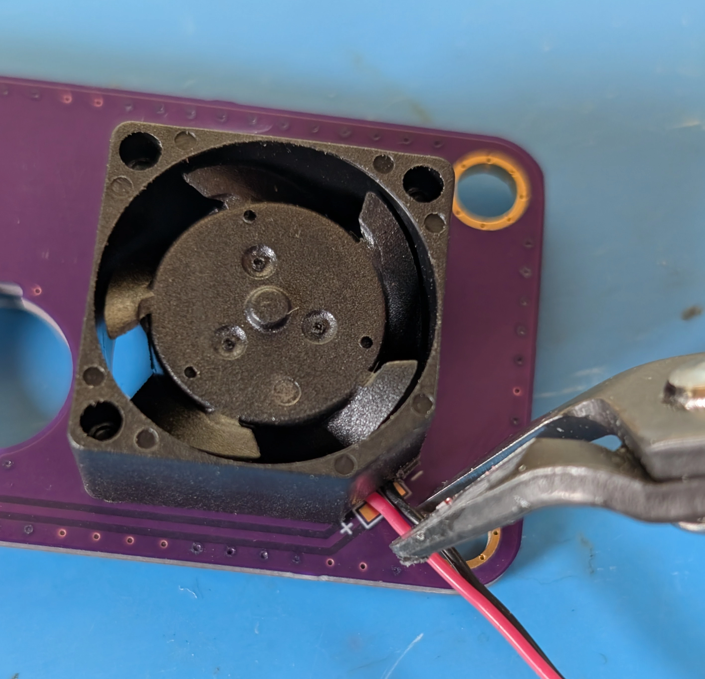

TS-USB4 Box Build#
This guide assumes you have a tested and calibrated TS-USB4 variant mainboard, as shown below:
{kind=link}

If you do not have a tested and calibrated TS-USB4 mainboard, check out the Mainboard Assembly Guide and then the Testing and Calibration Guide.
If you wish to convert your existing TS-PCIe variant PCBA, use the Changing Variants Guide.
Step 1: Source a USB4/TBT Adaptor#
The USB4 variant of ThunderScope is designed to work with any M.2 NVME adaptor that:
Provides 4-lane PCIe tunneling to the host
Can be modified to output the USB voltage (VUSB) on the M.2 3V3 rail.
The following is a table of chipsets that support 4-lane PCIe tunneling:
Vendor |
Part Number |
Notes |
|---|---|---|
ASMedia |
ASM2464PD |
USB4, Poor support for older TBT3 hosts |
ASMedia |
ASM2464PDX |
Similar to above but has an internal PCIe switch |
Intel |
JHL9480 |
TBT5 |
Intel |
JHL9440 |
TBT4 only version of above |
Intel |
JHL7440 |
TBT4 |
Intel |
JHL6x40 |
TBT3 |
Intel |
DSL6x40 |
TBT3 |
Warning
Your adaptor must use one of these to work with TS-USB4.
As designs with these chipsets may vary, this guide will not go in depth on determining if specific adaptors can be modified to output VUSB on the M.2 3V3 rail. Instead, a table of adaptors that are known to be modifiable to work with TS-USB4 is provided below:
Step 2: Modify the USB4/TBT Adaptor#
Below is a photo of the JoneyTech adaptor, with components of interest annotated.
The procedure for this modification is as follows:
Remove the ferrite bead (1) from the board. This will disconnect 3V3 from the M.2 connector.
Solder one end of a wire to the (-) terminal of the VUSB current shunt (2). The (-) terminal is the terminal with the lower voltage during operation. We solder to this terminal so that our current draw can still be monitored by the PD controller.
Solder the other end of the wire to the (+) terminal of the M.2 bulk capacitor (3). This will connect the USB voltage (VUSB) to the 3V3 pins of the M.2 connector.
Once completed, your adaptor should look like the following photo:
Below is a photo of the IOCrest adaptor, with components of interest annotated:
The procedure for this modification is as follows:
Remove the ferrite bead (1) from the board. This will disconnect 3V3 from the M.2 connector.
Solder one end of a wire to the (-) terminal of the VUSB current shunt (2). The (-) terminal is the terminal with the lower voltage during operation. We solder to this terminal so that our current draw can still be monitored by the PD controller.
Solder the other end of the wire to the (+) terminal of the M.2 bulk capacitor (3). This will connect the USB voltage (VUSB) to the 3V3 pins of the M.2 connector.
Once completed, your adaptor should look like the following photo:
Warning
This modification violates the M.2 specification, do not use this modified adaptor with anything other than a TS-USB4 without reverting the modification. Failure to do so will result in damage to the device it is used with.
Step 3: Design and/or Source an Interposer#
The TS-USB4 mainboard is designed with a custom pinout M.2 connector in a fixed location on the board, while adaptors have variable dimensions between their USB connector and their M.2 connector.
The connection between the adaptor and the mainboard has two requirements:
The PCIe signals need to be connected from the adaptor M.2 connector to the mainboard M.2 connector
The adaptor’s USB-C port needs to be centered along the edge of the mainboard.
An interposer board is used to accomplish these goals in a way where no changes are needed on the mainboard, essentially “soaking up” any changes in adaptor dimensions. Therefore, a new interposer will need to be designed in order to use a new adaptor.
If you are using one of the adaptors from the table above, the associated interposer design is available from the ThunderScope repo. These must be made on a 4-layer process with 0.8mm thick PCB and impedence control.
When designing an interposer, the board outline must match that of the mainboard and include three mounting holes that match up with standoffs on the mainboard, as well as clearance holes for the heatsink. Cutouts around the M.2 edge connectors must be added to fit the M.2 connector, with space to slide the M.2 edge connector into the M.2 connector on the mainboard/adaptor. It is helpful to label the mounting holes with assembly order and label which side of the board faces the adaptor/mainboard. The existing interposer boards can be used as a reference for new designs.
Step 4: Install the Adaptor on the Interposer#
Place the adaptor into the rightmost M.2 slot, aligning it with the edge connector and slotting it in at an angle. Flip the board over and screw the adaptor in through interposer mounting hole (1).
{kind=link}
{kind=link}
Step 5: Install the Interposer on the Mainboard#
At this point you should have a mainboard and an interposer with the adaptor installed.
Align the remaining interposer M.2 edge connector into the mainboard M.2 connector, slotting it in at an angle. Screw the interposer into the mainboard through interposer mounting holes (2-4).
{kind=link}
{kind=link}
Step 6: Assemble the Front Endcap#
Note
The front endcap is a 2-layer 1.6mm thick PCB, design files for it can be found in the ThunderScope repo. In order to solder the probe compensation terminals (Keystone Electronics 1046) with proper alignment, a 3d printed jig is used. The STL file for the jig can be found in the ThunderScope repo.
Place the jig with the rectangular slots on the right side. Load a terminal into each slot, with the round pins facing up.
{kind=link}
{kind=link}
Place the endcap onto the jig with channel numbers facing down, making sure the terminal pins go through the two through-holes on the right side of the PCB. Solder the pins to the PCB and remove the endcap from the jig.
{kind=link}
{kind=link}
Step 7: Install the Front Endcap#
Note
The extruded aluminium enclosure used for TS-USB4 is the Hammond Manufacturing 1455L1201BK. If bought individually from distributors this part number includes the extrusion, belly plate, screws, plastic bezels and a metal endcap. The plastic bezels can be used in place of the silicone bezels shown in the step below.
With the belly plate of the extrusion (the belly plate is the metal part that slides into the bottommost slot of the extrusion, by the screws) facing towards you, place a bezel on one side of the extrusion. For silicone bezels, choose the side with less flash (the extra material around the seam in the part) to face away from you.
{kind=link}

Place the assembled front endcap onto the bezel, the text on the endcap should be facing towards you. Drive the self-tapping screws into the extrusion through the endcap and bezel.
{kind=link}
{kind=link}
Warning
Do not overtighten the screws if using a silicone bezel. The bezel will bow out if the screw is overtightened, as shown on the right side of the photo below:
Step 8: Install the Boards in the Enclosure#
Line the boards up with the 2nd and 3rd board guides from the bottom (not counting the slot for the belly plate) as shown below and slide them into the enclosure.
{kind=link}
{kind=link}
Step 9: Assemble the Back Endcap#
Note
The back endcap is a 2-layer 1.6mm thick PCB, design files for it can be found in the ThunderScope repo.
Using a flush cutter, snip off the L-shaped plastic part next to the fan wires. The fan used is the Same Sky Devices CFM-2010CF-060-066.
{kind=link}
{kind=link}
Line up the fan with the three endcap fan mounting holes, the fan wires should be on the top right. Drive three self tapping screws (McMaster-Carr PN 95836A103) into the fan through the endcap.
{kind=link}
{kind=link}
{kind=link}
Using a flush cutter, cut the fan wires to the length of the copper pads and strip the remaining length of insulation from the wires.
{kind=link}
{kind=link}
{kind=link}
{kind=link}
Solder the wires to the pads on the endcap.
{kind=link}
{kind=link}
Step 10: Install the Back Endcap#
With the belly plate of the extrusion facing towards you, place a bezel on the side of the extrusion opposite the front endcap. For silicone bezels, choose the side with less flash (the extra material around the seam in the part) to face away from you.
{kind=link}
Place the assembled back endcap onto the bezel through the BNC connectors, the text on the endcap should be facing towards you. Drive the self-tapping screws into the extrusion through the endcap and bezel, then drive an M4 screw through the endcap into the grounding lug.
{kind=link}
{kind=link}
Warning
Do not overtighten the screws if using a silicone bezel. The bezel will bow out if the screw is overtightened, as shown on the right side of the photo below:
Step 11: Engrave the Enclosure#
Danger
This step is optional and the instructions below are for internal use. If you wish to replicate this step, do so at your own risk and observe proper laser safety precautions!
Slide the unit into the fixture on the bed of the laser engraver. Turn on the air filtration system and put on the laser safety glasses. Plug the unit in and run the engraving and end of line script on the engraving station computer.
{kind=link}
{kind=link}
Todo
Update photos to match text and add info about script once it is made
This completes the box-build for TS-USB4!